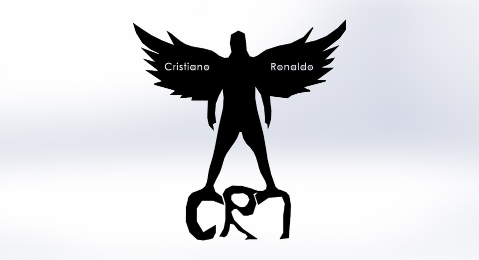
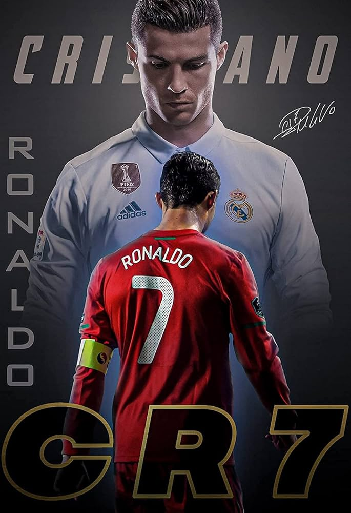

CRISTIANO RONALDO
CRISTIANO RONALDO


Cristiano Ronaldo dos Santos Aveiro was born on February 5, 1985, in Madeira, Portugal to Maria Dolores dos Santos Aveiro and José Diniz Aveiro. Cristiano has an elder brother, Hugo and two elder sisters, Elma and Liliana Cátia. His name was inspired by the former US-president, Ronald Reagan, whom his father was influenced by.
The island of Madeira was also the place where Cristiano first learned to master his skills as a footballer. He spent his early years playing for his local team, Nacional, and by the time he turned 12 years old, he already made his name for himself as one of Madeira's top footballers . It wasn't long before he started to catch the attention of other big Portuguese clubs. Among Sporting was Benfica, a team Cristiano and his father followed as a young boy. However he eventually chose to play for Sporting which was a team his mother loved and followed as she was growing up, to play with the likes of Figo was the dream for her son.
He was then spotted by former Liverpool manager, Gerard Houllier at the age of sixteen but Liverpool had no intentions to sign him at that time because they thought he was too young and he needed more time to develop his skills. However, in the summer of 2003, when Sporting played against Manchester United and defeated them, Cristiano caught the attention of Manchester United manager, Sir Alex Ferguson.
Ronaldo became Manchester United's first-ever Portuguese player. Initially, he requested for the number 28 as his jersey number because he didn't feel that he could live up to the pressure of previous players such as George Best and David Beckham who wore the number 7 jersey.
The year 2006 to 2008 proved to be a rather controversial year for the star. In the 2006 World Cup, Cristiano faced accusations regarding his sportsmanship. In a quarter-final match against England, he was heavily criticized for sending of his club team mate, Wayne Rooney who was playing for the England team. It wasn't too long until fans started accepting Cristiano again. In 2007, he won PFA Young Player of the Year, PFA Player of the Year, PFA Fans' Player of the Year, Portuguese Footballer of the Year, FWA Footballer of the Year, Sir Matt Busby Player of the Year and Manchester United's Players' Player of the Year. The year 2008 also saw him taking back the PFA Player Of The Year Award for the second time running. That same year, Ronaldo also had to deal with controversies regarding his club transfer to Spanish giants, Real Madrid. He eventually chose to stay with Manchester United and stressed to the public that he had no intentions of leaving the club.
Cristiano now lives with his cousin, Nuno and his brother in law Ze. When he is not on the field, he is a very family oriented person. Growing up, when he was about to choose football as his career, he said that it was very difficult for him as that would mean lesser time with his family, especially his mother, whom he says play a major role in his life.
During his free time, Cristiano enjoys cooking. He mentioned in an interview that he usually cooks before he leaves for his soccer practice. Because he is constantly training, Cristiano rarely has time to watch TV. If he does get the time to watch, he says he loves watching one of the local Portuguese game show which is mostly about trivia questions. Cristiano is an avid learner and he takes interest in learning new things everyday. Among Cristiano's biggest pet peeves are smoking, people who don't make an effort and dishonesty.
When the tsunami hit South East Asia, Cristiano flew to Indonesia to help those in need. He auctioned off a few stuff to help raise funds for charity. He hopes to get involved in more charity projects in the future because he believes his star status will help him reach out to others for help.
- IMDb mini biography by: Ezequiel De Castilla
Ronaldo has won five Ballon d'Or awards and is the first men's player to reach 900 career goals. He currently plays for Al-Nassr in Saudi Arabia and captains the Portugal national team. Beyond his on-field achievements, Ronaldo is a global icon, recognized for his athleticism and philanthropy, including significant charitable donations.
🇵🇹 Born: February 5, 1985, Madeira, Portugal
⚽ Position: Forward
🏟️ Clubs: Sporting CP, Manchester United, Real Madrid, Juventus, Al Nassr
🏆 Major titles: 5× UEFA Champions League, Euro 2016, Nations League 2019
Family Details:
Cristiano Ronaldo's family includes his partner, Georgina Rodriguez, and their five children: Cristiano Jr., twins Eva and Mateo, Alana Martina, and Bella Esmeralda. His eldest son, Cristiano Jr., is from a previous relationship, while the twins and Bella are from his relationship with Georgina. The family currently resides in Riyadh, Saudi Arabia, where Ronaldo plays for Al-Nassr.
Cristiano Ronaldo Jr.: Born in 2010, his mother's identity is not publicly known. He plays football for the Al Nassr youth academy.
Eva and Mateo: Born in 2017 via surrogacy.
Alana Martina: Born in 2017, her mother is Georgina Rodriguez.
Bella Esmeralda: Born in 2022. Her twin brother passed away shortly after birth.
Georgina Rodriguez: A Spanish model, she has been Ronaldo's partner since 2016. She plays a significant role in raising all of the children.
Family Dynamics: The family appears to have a close-knit relationship, with Ronaldo frequently sharing family moments on social media. They relocated to Saudi Arabia, where Ronaldo is currently playing.
Security Concerns: Due to threats, the family has reportedly taken increased security measures and refrains from sharing images of their younger children on social media.